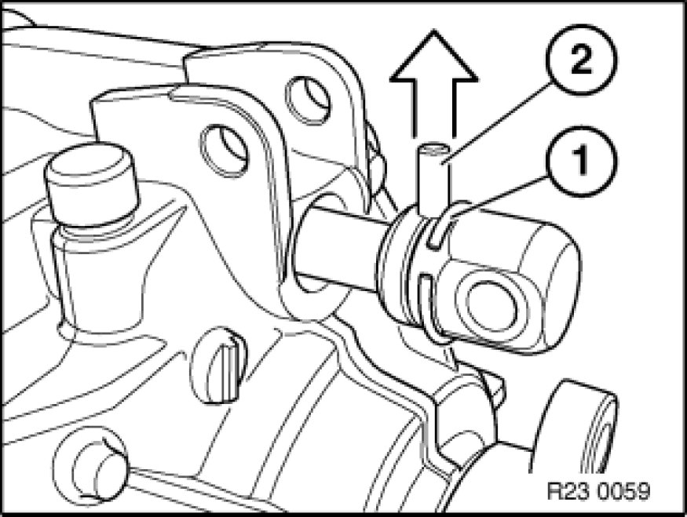

Installing Replacement Transmission (GS6-37BZ) AWD
23 00 036 - Installing replacement transmission (GS6-37BZ) AWD

Important!
After completion of work, check transmission fluid level Procedures.
Use only the approved transmission fluid.
Failure to comply with this instruction will result in serious damage to the transmission.

Recycling:
Catch and dispose of escaping transmission fluid.
Observe country-specific waste-disposal regulations

Necessary preliminary tasks:
- Drain gear oil at oil drain plug. Tightening torque:23 00 4AZ Transmission in General
- Remove transfer case.
- Remove transmission

Convert following parts from previous transmission to new transmission.
- Release bearing and release lever Service and Repair
- Knurled pin for clutch slave cylinder
- Reversing light switch, tightening torque: 23 41 5AZ [1][2]Automatically Shifted Manual Transmission/Transaxle.

Convert shift rod joint.
Push back retaining ring (1) and drive out dowel pin (2).
Note:
Check damping disk (6) for damage and replace if necessary.
Add final details to vehicle.
Check oil level.
Installation Note:
Observe greasing specification.